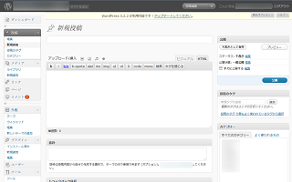

CMSでのホームページ作成方法
CMSは「コンテンツ・マネジメント・システム」の略ですが、文章や画像などのコンテンツを管理して簡単に情報発信するためのシステムのことです。
おおむね、ブログの管理画面のようなものになりますが、CMSを使えば、HTMLやCSSなどの知識がなくても直感的にウェブサイトを構築することができます。
このCMSには「WordPress」や「Movable Type」、「PukiWiki」などさまざまな種類があり、レンタルサーバーにソフトをインストールすることにより、ウェブ上の管理画面からサイトを更新できるようになります。
無料ホームページスペースにはCMSを導入することはできませんが、レンタルサーバーでホームページを作成する場合には、CMSをサーバーへインストールして利用することができます。
特に大規模なウェブサイトを運営する際、「ホームページ作成ソフト」よりも「CMS」を利用した方が更新はしやすいです。代表的なCMSにはWordPressやMovable Typeなどがありますが、いずれもパソコン上ではなく、ブラウザでウェブ上の管理画面にアクセスしてサイトを更新するためのツールになります。
「WordPress」と「Movable Type」の違い
CMSにもさまざまありますが、「WordPress」や「Movable Type」の人気が高いです。
■WordPress
https://ja.wordpress.org/

「WordPress」はアクセスがある度にデータベースからデータを引っ張ってきて、その都度ページが出力される動的なホームページです。そのため、HTMLファイルなどの現物はサーバー上には作成されません。
現物のファイルがないため、少し不安になるかもしれませんが、ホームページのデータはサーバーのデータベースのなかに入っています。ホワイトハウスなどの大規模サイトでも利用されており、CMSのシェアが高く、オープンソースなので無償で利用することができます。
URLは以下のように設定できますが、「/カテゴリ名/記事タイトル/」の形式で作ることをおすすめします。

ただし、URLが「.html」の形式ではないため、当サイトのような静的なHTML形式のホームページからWordPressへ移行するのは相性が悪いかもしれません。
■Movable Type
https://www.sixapart.jp/movabletype/
一方、「Movable Type」は実際にHTMLやCSSファイルの現物がサーバー内にて作成される静的なホームページになります。
通常のホームページと同様、Movable Typeを使用した場合でもHTMLやCSSファイルがサーバー内に出力されるため、HTMLタグの手打ちでホームページを作っている方にとってはMovable Typeの方が相性が良いかと思います。
企業や大学などのホームページでも利用されており、商用パッケージ型のCMSとして人気があります。また、非営利個人の場合は無償ライセンスで利用することができます。
「ホームページ＝ウェブサイト」と考えた場合、ブログ記事ではなく、ウェブページのテンプレートで作成していくことをおすすめします。
一方、ブログサイトの場合はURLを「/カテゴリ名/記事タイトル.html」の形式で作ることをおすすめします。
当ホームページはDreamweaverにて「.html」の形式で作成していますが、もしCMSに移行する場合はMovable Typeの方が相性はよいのかもしれません。
ただし、Movable Typeはサイドバーなどに新しいページを加えた際など、全ページを書き変える「再構築」の作業が必要となります。
そのため、ページ数が膨大で頻繁に更新するサイトの場合はWordPressの方が便利です。WordPressの場合はファイルの現物を作らず、アクセスがあるたびにその都度ファイルが出力されるため、その出力元となるデータを書き変えるだけですむメリットがあります。
サイドバーに頻繁に入れ替わるランキング情報を掲載したり、あるいは更新頻度が高く、頻繁に新着記事を書き加える必要がある場合、Movable Typeでは全ページを再構築するまでは反映されないため、そういったサイトではWordPressを選択されることをおすすめします。
CMSで作成するメリットとデメリット
CMSは、文章を入力すると自動でHTMLタグ付きの文章に変換してくれる翻訳ツールのようなものです。ウェブ上の管理画面から編集することになりますが、HTMLやCSSの知識がない方でも簡単にサイトを構築することができます。
- CMS（※タグの知識が不要、ブラウザを使用してウェブ上で作成）
一方、当サイトでご紹介しているようなHTMLとCSSで作るホームページの場合、タグの知識は必要になり、パソコン上で編集してサーバーへアップロードする形になります。
- タグ手打ち（※タグの知識が必要、パソコンで作成）
- ホームページ作成ソフト（※ソフトによってはタグの知識が不要、パソコンで作成）
サイトを作成して情報発信をしたいものの、HTMLやCSSを習得する時間がない場合、まずはCMSを使用するのが最良の選択肢といえるでしょう。
一方、デメリットについては、CMSではHTMLやCSSの知識は必要ないものの、逆に使いたい場合には使いづらくなります。コンテンツ部分などでは多少のHTMLの編集はできますが、それ以外で使える部分は非常に限られてきます。
また、OGPタグや関連記事、メタタグの説明文、あるいは構造化データなど、ページによって個別に設定する必要がある場合にも使いづらいです。
加えて、デフォルトで利用できる無料テンプレートには海外製のものが多いため、欧文フォントのHelveticaやArialが指定されている場合には表示に違和感が出てくるかもしれません。その場合、CSSのfont-familyに日本語フォントを指定することで対応できますが、実際には日本語対応の有料テンプレートを購入するしかないと思います。
概ね、CMSを利用する際はテンプレートを用意するのが最大の難関になるかと思います。
さらに、HTMLサイトは10年間放置しても改竄される心配はほとんどありませんが、CMSの場合、プログラムの脆弱性をついたトラブルがわりと多く、常に最新版のCMSにアップデートしておく必要があります。
そのほか、カスタマイズ方法やバージョンアップの方法など、CMSに関する知識は必要になるため、既にHTMLとCSSを使ってホームページを作成している方にとっては、かえって難しく感じてしまうかもしれません。
CMSを利用する際のレンタルサーバーの選び方
CMSを利用する際、MySQLのデータベースの利用が可能なレンタルサーバーを選択することをおすすめします。また、サーバーモジュールなども関係してきますので、利用したいCMSに対応しているかどうかも事前によく確認しておきましょう。
レンタルサーバーによっては自動インストール機能を利用できますが、公式サイトからソフトをダウンロードしてきて自分でサーバー内に設置することもできます。
静的なホームページと比較しますと、WordPressなどの動的なサイトで更新する場合はアクセスがあるたびにその都度ファイルを出力するため、サイトが重くなってしまう傾向があります。アクセス数が多いサイトの場合は格安サーバーでの運用は避けた方がよいかもしれません。
また、以前まではMovable Typeの人気が高かった印象がありますが、最近では無償で利用できるWordPressが主流になってきており、WordPressに特化したレンタルサーバーも多くなってきました。
WordPress専用のサーバーにMovable Typeをインストールしようとしても、ファイルの転送が途中で途切れてしまったり、モジュール不足などで利用できなかったりすることも多いです。利用したいCMSに対応しているかどうかは事前によく確認することをおすすめします。